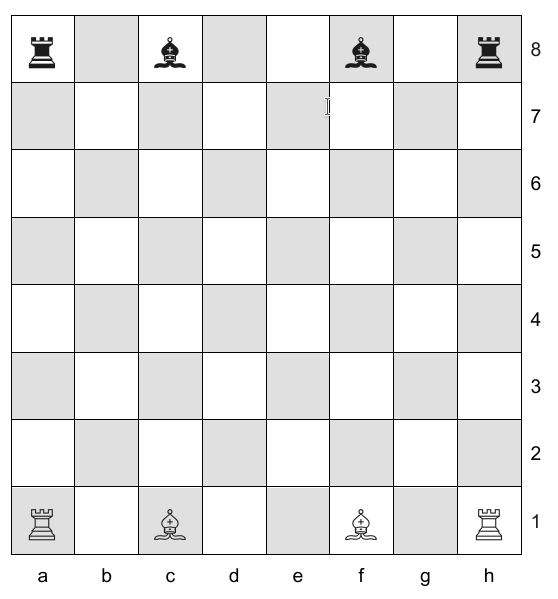

University of St Andrews
School of Computer Science
CS1002 — Object Oriented Programming
W08— Simplified Chess
Deadline: 5 Nov 2020 Credits: 35% of coursework mark
MMS is the definitive source for deadline and credit details
You are expected to have read and understood all the information in this specification and any accompanying documents at least a week before the deadline. You must contact the lecturer regarding any queries well in advance of the deadline.
This practical involves modelling and implementing a solution to a specified problem. You will need to identify which classes to create, what fields they will have and which methods they will need. You will also need to implement a solution and test it.
Your aim in this practical is:
to use 2-D arrays as a data structure in Java programs.
By the end of this practical, you should be able to:
design and implement data structures based upon 2-D arrays,
design and implement methods that manipulate 2-D arrays, and
carry out appropriate tests to confirm your program’s functionality.
In this practical you will design and implement a program to simulate a simplified form of chess. If you are unfamiliar with the game you should start by reading the description on Wikipedia: http://en.wikipedia.org/wiki/Chess. Pay particular attention to the way in which the different pieces move. We define Simplified Chess for the purposes of this practical as being played on an 8 x 8 board, where white and black both have two bishops and two rooks (castles). The game is over when one player has lost all of his/her pieces. The task of the practical is to design and implement a program to:
represent the current state of a game of simplified chess,
allow this state to be updated by making moves, and
recognise that the game is over and disallow further moves from being made.
The initial state of the board should be as follows, with white to move first:

When run, your program should display the board (this functionality is already implemented in the starter code), state whose turn it is, and ask the user to enter the next move. This can be accomplished by using the Scanner library to read in two strings from the user. The move is represented by the start and end coordinates using the coordinate system on the board above. For example moving the white rook from position “a1” to position “a4” would be accomplished by the following interaction:
White plays. Enter move:
a1
a4If the move specified is legal (correct colour for whose turn it is to play, and a legal move for a specified piece), the program should update the board state and display the board. If the move is illegal it should display an error message and wait for the next command. If the game is over, it should reject the move and display an appropriate message. If the user enters “quit” at any point, the game should immediately terminate.
You are expected to employ a 2-D array to represent the chess board and to decompose your solution into classes and methods, with a very basic main method which starts a game. The starter code on studres contains skeleton code which should help you with your design. The starter code also implements a method for printing the board, as well as all expected messages. You are encouraged to use these in order to comply with the autochecker.
The task in this practical is to write a program to support the playing of a game of simplified chess. It would be sensible to review your lecture notes on Noughts & Crosses before continuing. Chess shares many of the same design considerations. You will need to think about the following:
Board representation. The practical specifies a two-dimensional array. The board is square and your array array will have to be big enough contain the whole board.
Next to Play. How will you keep track of whose turn it is?
Making moves. How will you convert the positions from a string (e.g. “a2”) to integer indices that can be used with an array (e.g. 0 and 1)?
Checking moves. How will you ensure that a specified move is legal? How will you update the state of the board to reflect that a move has been made?
Victory. How will you detect victory?
There is starter code with some Java classes provided with this specification. You should use it to help you get started, but feel free to change and extend it as needed as long as it conforms to the specification explained below, which is used by the autochecker.
The game should start by printing the board on the terminal using a textual representation. Each free square is marked by a dot (.), and each of the pieces by a different letter: “R” for rooks and “B” for bishops. White is represented by capital letters, and black by lowercase letters, so “r” is a black rook and “B” is a white bishop. The provided Board class contains a method which does this.
Your program should then state whose turn it is to play, prompt the user to enter a move, and then read two strings from the user: the starting and the ending position (e.g.: “c3” or “d7”). If the move is not allowed, it should print “Illegal move!”, display the board and ask again. If the move is legal, it should update the board, display the new state of the board and prompt the user again. A sample game is shown below (the input typed by the user is shown in red):
a b c d e f g h
8 r . b . . b . r 8
7 . . . . . . . . 7
6 . . . . . . . . 6
5 . . . . . . . . 5
4 . . . . . . . . 4
3 . . . . . . . . 3
2 . . . . . . . . 2
1 R . B . . B . R 1
a b c d e f g h
White plays. Enter move:
c1
e3
a b c d e f g h
8 r . b . . b . r 8
7 . . . . . . . . 7
6 . . . . . . . . 6
5 . . . . . . . . 5
4 . . . . . . . . 4
3 . . . . B . . . 3
2 . . . . . . . . 2
1 R . . . . B . R 1
a b c d e f g h
Black plays. Enter move:
c8
b5
Illegal move!
a b c d e f g h
8 r . b . . b . r 8
7 . . . . . . . . 7
6 . . . . . . . . 6
5 . . . . . . . . 5
4 . . . . . . . . 4
3 . . . . B . . . 3
2 . . . . . . . . 2
1 R . . . . B . R 1
a b c d e f g h
Black plays. Enter move:The first user input moves the white bishop from position c1 to position e3. This is a legal move and is therefore accepted. The bishop is moved, the new board displayed, and black is next to move. The second user input tries to move the black bishop from position c8 to position b5. This is not a legal move for a bishop (as bishops can only move diagonally), so the move is not accepted and black is still next to play.
The game should continue until one side wins. Then a message is displayed (e.g. “White wins!”) and the program terminated. To stop a game at any time, type “quit” at the prompt.
All the messages are defined as String constants in the starter code, to make it easier to match the expected output. For example, to print the victory message for the white player, you could write
System.out.println(WHITEWINS_MSG);From any method inside the Game class. Have a look at the provided starter code for more examples.
Like the previous practical, this assignment will make use of the School’s automated checker. You should therefore ensure that your program can be tested using the autochecker. It should help you see how well your program performs on the tests we have made public and will hopefully give you an insight into issues prior to submission. You can run the autochecker run using one of the following commands depending on which operating system you are using:
java -cp ".:AC/junit.jar:AC/testing.jar:AC" Tests (Linux and MacOS)
java -cp ".;AC/junit.jar;AC/testing.jar;AC" Tests (Windows)
If you are working on one of the lab machines running Linux, the automated checking system is easy to run from the command line in your W08Practical folder:
stacscheck /cs/studres/CS1002/Practicals/W08/StacscheckTests
The automated checking system will only check for basic operation of Parts 1 and 2 listed below and are not complete. It is up to you to provide evidence that you have thoroughly tested your program beyond this. One possible way of testing would be to play a number of games through, testing legal and illegal moves, as well as different victory conditions to see if everything worked correctly.
At each step, you could try one/some of the following:
A legal move. This would change the state of the game, and result in one of the pieces changing its position, or being removed from the board. This should be shown on the screen.
A move outside one’s turn. A white piece should not be allowed to move if it’s black’s turn to move, and vice versa.
An illegal move. A move should not be possible if the target square is already occupied by a piece of the same colour, or if the target square is outside the board.
A move that leads to victory. Victory should be indicated immediately after a move that results in it.
This assignment can be broken up into three parts, which are best done in the indicated order, but you may want to read on until the end of this document before starting work.
After familiarising yourself with the starter code, the first task you can tackle is to convert the provided user input into a change in the board state. Create a method for making moves in the Game class. This method could, for example, accept the set of coordinates provided by the user via the Scanner object, and modify the gameBoard to move the appropriate piece to the appropriate location.
Think about how to manipulate arrays to get and set the piece data. In particular, think about how to convert the user input (which is a String) into indices that can be used with your board. Once you have implemented moving pieces on the board, you should now add checks for valid and invalid moves, and only allow valid moves. You should add the appropriate output when detecting an illegal move, and prompt the user for further output.
Your next step is to extend your program to allow playing a complete simplified game. It should allow two players to take turns and continue until it recognises that the game is over. Think about the possible end states of the game. Create a method with an appropriate name such as “checkGameOver" which will check if there is a winner in the game, and print the required output. In addition, it should ultimately return whether or not the game has ended. This method can be called inside the main loop provided in the starter code to exit the program whenever the game is over.
At this point, it makes sense to start checking your solution against automated tests to ensure it works against simple scenarios. Some of the more complex tests will fail at this time, but work on passing the first few.
Only attempt this step once you are satisfied that your implementation of previous steps is correct, well-commented, and well-tested. Create new classes BoardEx and GameEx so you do not break any automatic tests. Now modify these classes to extend your game to support the queen and knight pieces. Hint: a queen is like a rook and a bishop combined.
Next, add support for the king piece. In order to do so you will need to support the concept of “check” – see the description at the web page above. Can you now modify the game over condition to be “checkmate” as in real chess? What about “stalemate”? Finally, you may want to add pawns to complete the full game of chess. For the purposes of this practical, we do not expect you to handle advanced rules such as castling or promoting pawns.
Your report must be structured as follows:
Overview: Give a short overview of the practical: what were you asked to do, and what did you achieve? Clearly list which parts you have completed, and to what extent.
Design: Describe the design of your program. Justify the decisions you made. In particular, describe the classes you chose, the methods they contain, a brief explanation of why you designed your model in the way that you did, and any interesting features of your Java implementation. Make sure to discuss how and where you performed bounds checking, how you implemented the logic for testing which moves are valid, and how you approached more complex functionality such as captures and checking whether anything is blocking the piece’s way.
Testing: Describe how you tested your program. In particular, describe how you designed different tests. Your report should include the output from a number of test runs to demonstrate that your program satisfies the specification. Please note that simply reporting the result of the autochecker is not enough; you should do further testing and explain in the report why you think that your testing is sufficient to prove that your program is correct.
Evaluation: Evaluate the success of your program against what you were asked to do.
Conclusion: Conclude by summarising what you achieved, what you found difficult, and what you would like to do given more time.
Don’t forget to add a header including your matriculation number, tutor and the date.
Package up your W08Practical folder and a PDF copy of your report into a zip file as in previous weeks, and submit it using MMS, in the slot for Practical W08. After doing this, it is important to verify that you have uploaded your submission correctly by downloading it from MMS and making sure the files can be opened correctly and that tests still run.
| 1-6 | Very little evidence of work (such as unmodified starter code), software which does not compile or run, or crashes before doing any useful work. You should seek help from your tutor immediately. |
| 7-10 | Completion of Part 1, with appropriate discussion in the report. Some sensible code for initialising and handling the 2-D array and performing some bounds checking. A decent attempt at further parts, but with serious problems such as not compiling, or crashing often during execution. |
| 11-13 | Completion of Parts 1 and 2, allowing two players to play a simplified version of the game. Serious weaknesses such as allowing incorrect moves, not being able to complete a game, poor code readability, occasional crashes due to poor bounds checking, or a weak report riddled with mistakes. |
| 14-16 | Completion of Parts 1 and 2, accompanied with a good code style and insightful report. Solutions in this band will have a correct implementation be mostly correct but can be improved in terms of code quality: for example: poor method decomposition, poor object-oriented design, lack of comments or wrong or inappropriate comments, use of magic literals instead of constants, or an overly complex implementation. |
| 17-18 | Completion of Parts 1 to 3, consisting of clean, well-commented code, and accompanied by an excellent report and evidence of systematic testing. |
| 19-20 | Completion of Parts 1 to 4, going beyond the basic spec in a way that demostrates use of advanced concepts covered in class. The solution must demonstrate extensive testing, excellent quality of design and code, and be accompanied by an exceptional report which shows independent research and novel ideas. |
See also the standard mark descriptors in the School Student Handbook:
http://info.cs.st-andrews.ac.uk/student-handbook/learning-teaching/feedback.html#Mark_Descriptors
The standard penalty for late submission applies (Scheme B: 1 mark per 8 hour period, or part thereof):
http://info.cs.st-andrews.ac.uk/student-handbook/learning-teaching/assessment.html#lateness-penalties
The University policy on Good Academic Practice applies:
https://www.st-andrews.ac.uk/students/rules/academicpractice/
If you have completed all Parts and want to experiment further, here are some ideas you could pursue:
Can you replace one or both of the human players with an artificial intelligence? The very simplest such AI would collect all of the possible moves together and select one at random, but you can do much better than that
Can you extend your solution to add more advanced rules of chess such as promotion, castling, and en passant (https://en.wikipedia.org/wiki/En_passant)
We strongly recommend making sure that you have an excellent basic solution with excellent code quality and a detailed, insightful report before looking into any of these.